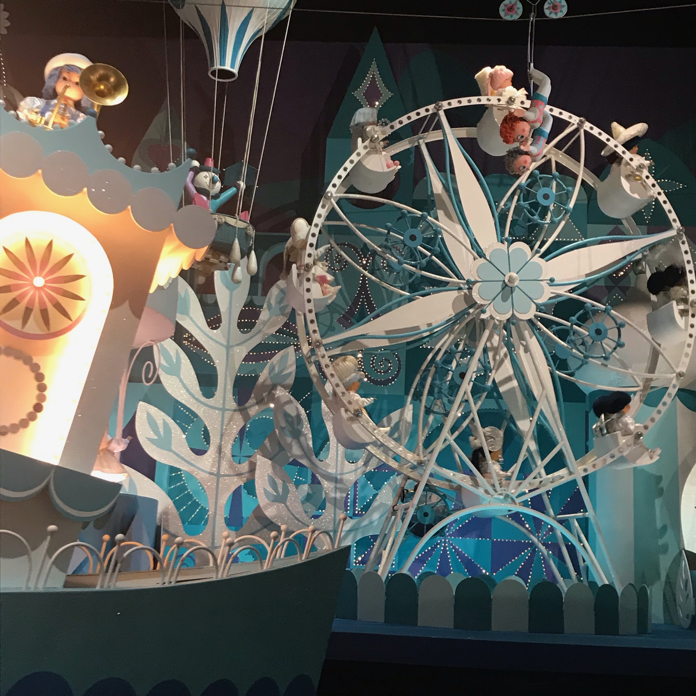
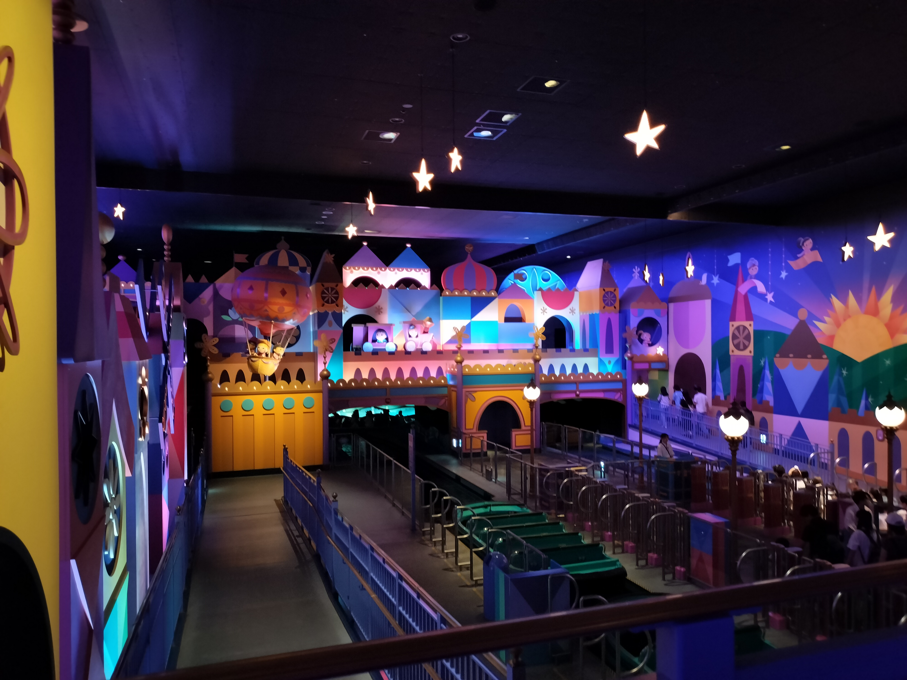

ウォルト・ディズニーはメアリー・ブレアの斬新で子供っぽい画風に共感し、アトラクション制作にあたって、アトラクション全体のデザインをメアリー・ブレアに依頼しました。
その結果、it's a small worldというアトラクションのスタイルとコンセプトはメアリー・ブレアの真髄が詰まったアトラクションとなりました。

メアリー・ブレアの世界観（ページ作成者 撮影）

it's a small worldのかわいらしい内装（ページ作成者 撮影）
メアリー・ブレアはディズニー社のアーティストとして1939〜1953年にわたり、活躍しました。
また、1991年にディズニーのレガシーに多大な影響を与えた多くの才能あるアニメーター、イマジニア、ソングライター、俳優、ビジネスリーダーに贈られる「ディズニー・レジェンド賞」を受賞しています。
女性がディズニー・レジェンド賞を受賞したのはメアリー・ブレアが初でした。